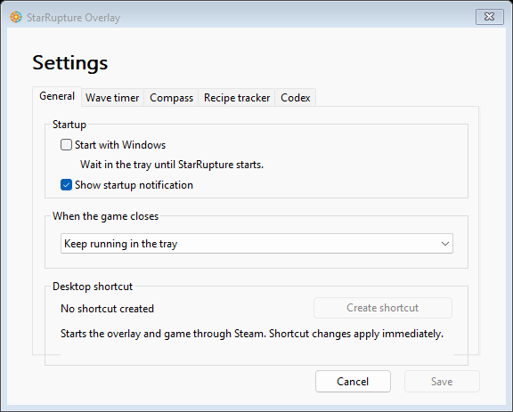
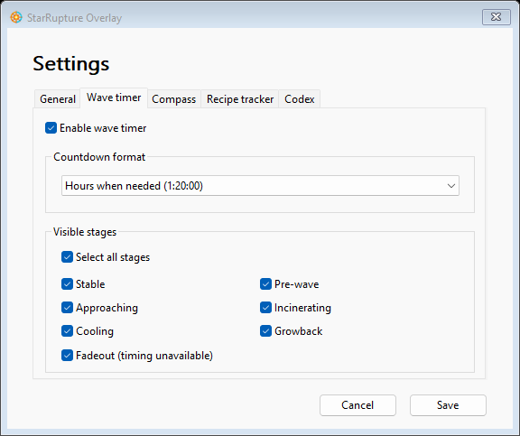
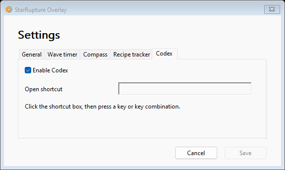
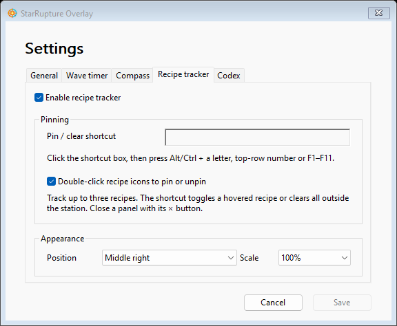
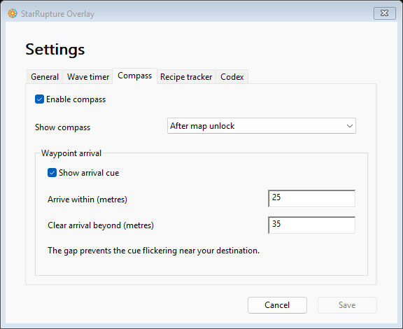

SETTINGS / STARTUP, APPEARANCE AND CONTROLS
Settings and controls
Choose how the overlay starts, which features you use and where they appear.
Double-click the notification-area icon to open Settings, or use its right-click menu. Choose Save to apply your changes. The overlays may briefly disappear while the changes take effect.
General

- Start with Windows: launch the overlay when you sign in. It waits in the notification area for StarRupture. This is off by default.
- Show startup notification: show a Windows notification when the overlay starts. If the game is closed, click the waiting notification to launch it through Steam.
- When the game closes: keep the overlay running, ask what to do or exit it automatically.
- Desktop shortcut: create, update or remove a shortcut that starts the overlay and launches the game through Steam. Shortcut changes apply immediately.
When you start 1.2.0 from a new folder, the overlay updates its existing desktop shortcut and enabled Windows startup entry.
Wave timer

Use the tray menu to unlock, move, lock or reset the timer's position.
Update 3: enable or disable the wave timer independently. Choose hours when needed, such as 1:20:00, or total minutes, such as 80:00. Below an hour, both formats use minutes and seconds.
Choose visible stages
Under Visible stages, tick the stages when you want the panel to appear. All are selected by default. Hover over a checkbox for an explanation. Use Select all stages to check or clear the whole list, then select Save.
For example, select only Pre-wave and Approaching to see the warning and approach. Keep Enable wave timer on so the overlay keeps tracking through hidden stages.
Codex

Enable or disable the Codex and change its shortcut in Settings > Codex. The default is K. See the Codex controls and pinning guide.
Recipe tracker

Both builds let you enable the tracker, change the pin/clear shortcut, select an upper, middle or lower right position and choose 75%, 100%, 125% or 150% scale.
Click the shortcut box and press Alt or Ctrl with a letter, top-row number or F1-F11, optionally adding Shift, then Save. The default is Alt+X. Choose a different shortcut if another app already uses it.
Update 3: the Recipe tracker tab also controls double-click pinning. Track up to three recipes; each has its own close button. Disabling the tracker preserves its settings and stops recipe preparation.
The tracker prepares its icons and recipe information automatically from your installed game. This tab shows its progress.
Compass UPDATE 3

Under Show compass, the default After map unlock waits for the map reward at Moon Energy Corporation level 3. Choose From the start to show the compass earlier. You can enable the compass and its arrival cue independently and set the arrival and clearing distances in metres. By default, the cue appears within 25 metres and clears beyond 35 metres. The clearing distance must be greater than the arrival distance.
Turning off a feature preserves its options. With all Update 3 features disabled, the app waits in the tray until you enable them again.
Tray menu and About
Use Start StarRupture to launch the game through Steam, the display controls to show or hide the overlays, or Exit to close the app.
About shows the app version, source revision, connection status and supported game. Copy support details helps prepare a bug report.